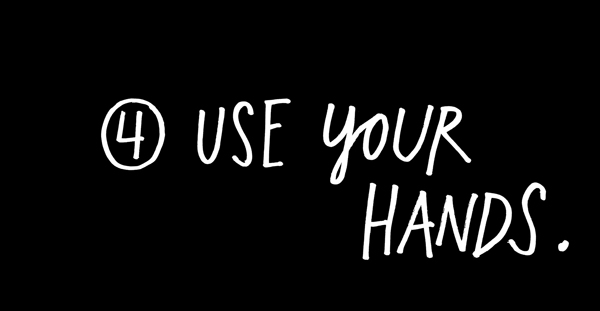
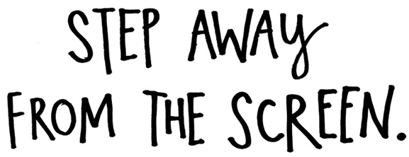
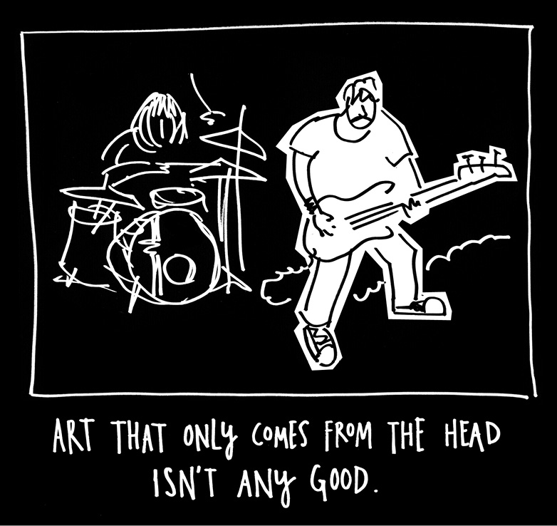
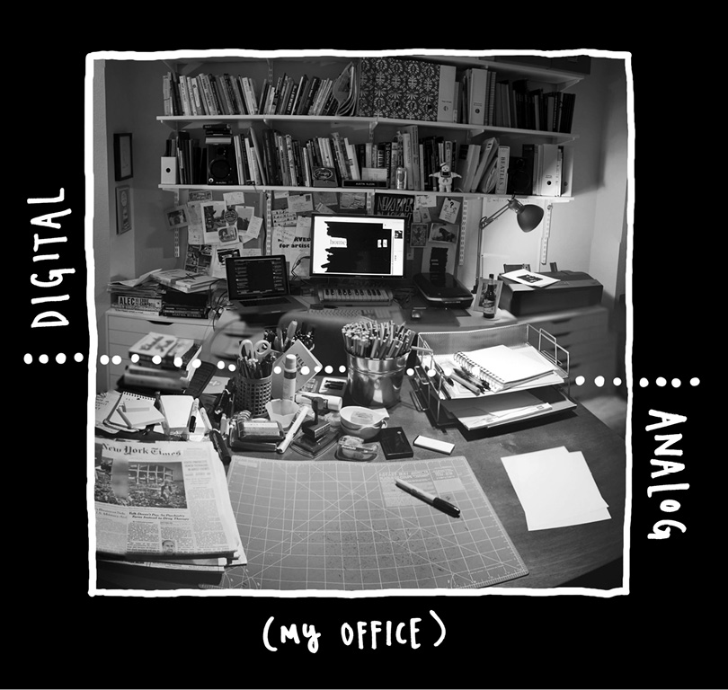

“We don’t know where we get our ideas from. What we do know is that we do not get them from our laptops.”
—John Cleese

My favorite cartoonist, Lynda Barry, has this saying: “In the digital age, don’t forget to use your digits!” Your hands are the original digital devices. Use them.
While I love my computer, I think computers have robbed us of the feeling that we’re actually making things. Instead, we’re just typing keys and clicking mouse buttons. This is why so-called knowledge work seems so abstract. The artist Stanley Donwood, who’s made all the album artwork for the band Radiohead, says computers are alienating because they put a sheet of glass between you and whatever is happening. “You never really get to touch anything that you’re doing unless you print it out,” Donwood says.
Just watch someone at their computer. They’re so still, so immobile. You don’t need a scientific study (of which there are a few) to tell you that sitting in front of a computer all day is killing you, and killing your work. We need to move, to feel like we’re making something with our bodies, not just our heads.
Work that only comes from the head isn’t any good. Watch a great musician play a show. Watch a great leader give a speech. You’ll see what I mean.
You need to find a way to bring your body into your work. Our nerves aren’t a one-way street—our bodies can tell our brains as much as our brains tell our bodies. You know that phrase, “going through the motions”? That’s what’s so great about creative work: If we just start going through the motions, if we strum a guitar, or shuffle sticky notes around a conference table, or start kneading clay, the motion kickstarts our brain into thinking.

“I have stared long enough at the glowing flat rectangles of computer screens. Let us give more time for doing things in the real world . . . plant a plant, walk the dogs, read a real book, go to the opera.”
—Edward Tufte
When I was in creative writing workshops in college, everything we did had to be double-spaced and in Times New Roman font. And my stuff was just terrible. Writing ceased to be any fun for me. The poet Kay Ryan says, “In the old days before creative writing programs, a workshop was a place, often a basement, where you sawed or hammered, drilled or planed something.” The writer Brian Kiteley says he tries to make his workshops true to the original sense of the word: “a light, airy room full of tools and raw materials where most of the work is hands-on.”
It wasn’t until I started bringing analog tools back into my process that making things became fun again and my work started to improve. For my first book, Newspaper Blackout, I tried to make the process as hands-on as possible. Every poem in that book was made with a newspaper article and a permanent marker. The process engaged most of my senses: the feel of newsprint in my hands, the sight of words disappearing under my lines, the faint squeak of the marker tip, the smell of the marker fumes—there was a kind of magic happening. When I was making the poems, it didn’t feel like work. It felt like play.
The computer is really good for editing your ideas, and it’s really good for getting your ideas ready for publishing out into the world, but it’s not really good for generating ideas. There are too many opportunities to hit the delete key. The computer brings out the uptight perfectionist in us—we start editing ideas before we have them. The cartoonist Tom Gauld says he stays away from the computer until he’s done most of the thinking for his strips, because once the computer is involved, “things are on an inevitable path to being finished. Whereas in my sketchbook the possibilities are endless.”
When it came time to sequence Newspaper Blackout, I scanned all the pieces into a computer and printed them out on little quarter sheets of paper. Then I pushed the sheets of paper all over my office, rearranging them into piles, and then a stack, the order of which I copied back onto the computer. That’s how the book was made—hands first, then computer, then hands, then computer. A kind of analog-to-digital loop.

That’s how I try to do all my work now. I have two desks in my office—one is “analog” and one is “digital.” The analog desk has nothing but markers, pens, pencils, paper, index cards, and newspaper. Nothing electronic is allowed on that desk. This is where most of my work is born, and all over the desk are physical traces, scraps, and residue from my process. (Unlike a hard drive, paper doesn’t crash.) The digital desk has my laptop, my monitor, my scanner, and my drawing tablet. This is where I edit and publish my work.
Try it: If you have the space, set up two workstations, one analog and one digital. For your analog station, keep out anything electronic. Take $10, go to the school supply aisle of your local store, and pick up some paper, pens, and sticky notes. When you get back to your analog station, pretend it’s craft time. Scribble on paper, cut it up, and tape the pieces back together. Stand up while you’re working. Pin things on the walls and look for patterns. Spread things around your space and sort through them.
Once you start getting your ideas, then you can move over to your digital station and use the computer to help you execute and publish them. When you start to lose steam, head back to the analog station and play.